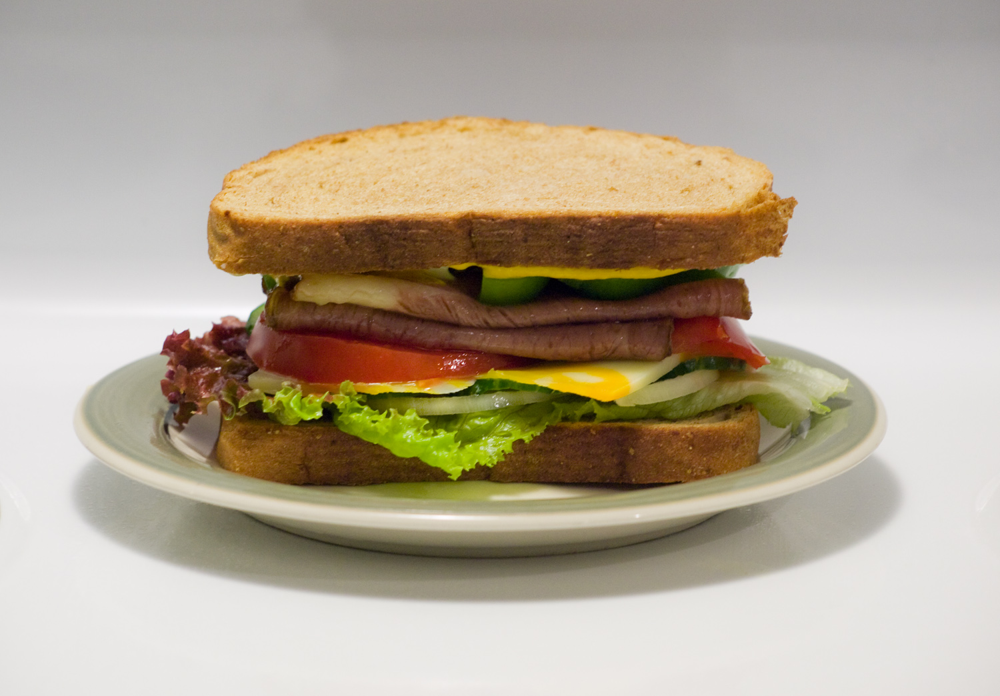

Sandwich

Description
This is a recipe for sandwiches detailing the ingredients and the steps
required to make it. Note: this only works with pre-made
and pre-packaged ingredients that do not need to be heated.
Ingredients
- Bread of your choice.
- Fillings of your choice.
- Optional: Condiments of your choice.
- Optional: Butter
Steps
-
Seperate two slices of bread - if not seperated already. Designate one
slice as the upper side and the other slice as the lower side.
-
Optional: Spread butter onto the inside of one or both slices of bread.
Leave the outside of both slices plain.
-
Place fillings on top of the inside of the lower slice of bread.
Note: it's better to put soggier fillings such as
tomatos in between other fillings, this will prevent you getting a soggy
sandwich that breaks the second you pick it up.
-
Optional: Place any condiments onto the inside of the upper slice of
bread.
-
Place the upper slice of bread on top of the fillings, ensuring that the
inside of slice touches the fillings.
-
Optional: Cut sandwich into pieces, cut horizontally for two rectangle
halves, cut again vertically if you'd like four square quarters, or cut
vertically if you'd like two triangle halves, and vertically again but
from the other corner if you'd like four triangle quarters.